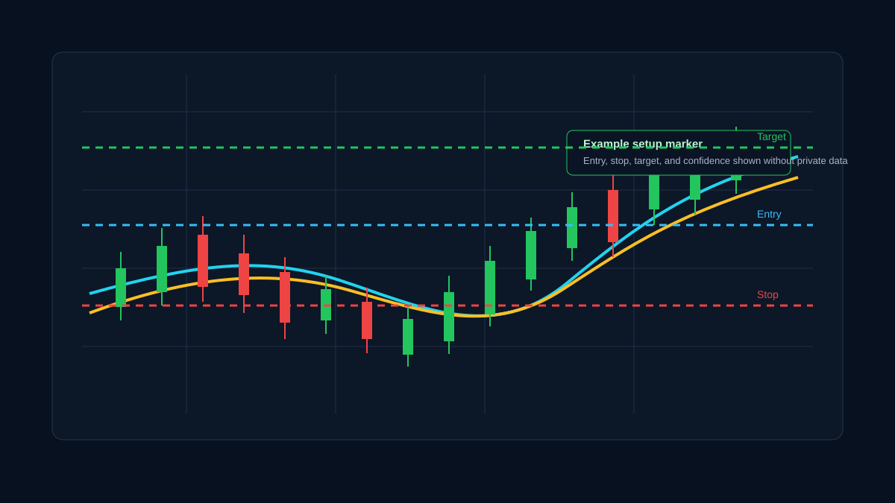
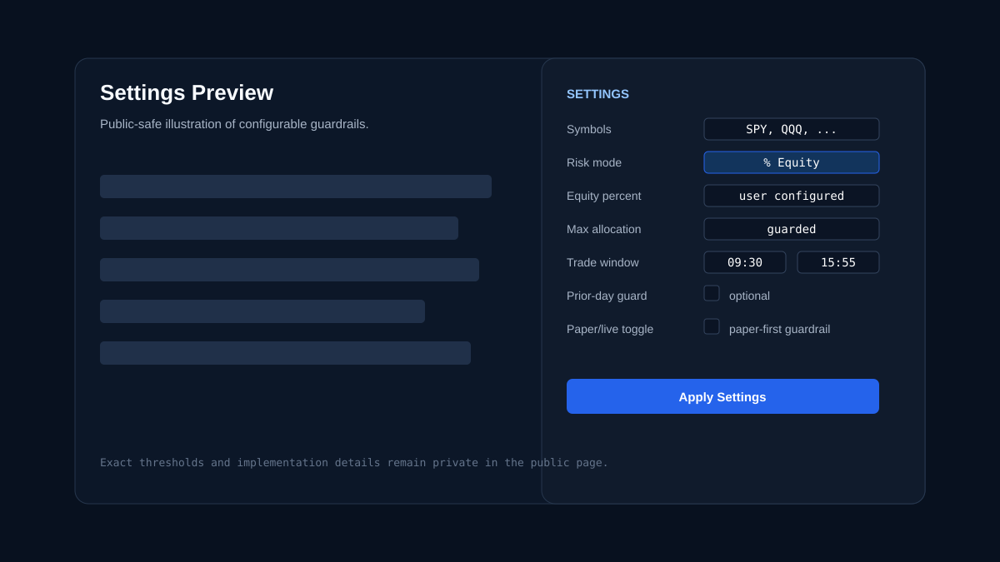

← Back to home

Screenshot Gallery
Views of the Electron desktop dashboard running with Alpaca paper-market data.
Main Dashboard
The primary view showing the interactive candlestick chart on the left and the sidebar with Session stats, Signal details, and Settings controls on the right. The bottom panel displays real-time event logs.

Signal Overlay with Entry, Stop, and Target
When a confirmed signal is detected, the chart displays projected entry, stop-loss, and take-profit levels along with a reward/risk visualization and a confidence score.

Settings and Risk Controls
All configurable parameters are accessible from the sidebar: symbol watchlist, strategy lookback periods, position sizing mode, stop/target distances, time window, and the live-mode toggle.